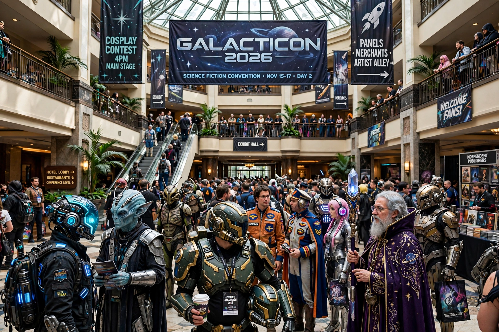

| Norwescon | |
|---|---|
| Status | Active |
| Genre | Science fiction / fantasy convention |
| Venue | DoubleTree by Hilton Seattle Airport |
| Location | SeaTac, Washington |
| First held | 1978 |
| Organizer | Northwest Science Fiction Society |
Norwescon is a science fiction and fantasy convention held annually in SeaTac, Washington, near Seattle–Tacoma International Airport. Founded in 1978, it is one of the largest regional science fiction conventions in the United States, typically held over Easter weekend and drawing several thousand attendees.
Norwescon was first held in 1978 and is sponsored by the Northwest Science Fiction Society (NWSFS). The convention grew steadily from a small regional gathering into a major Pacific Northwest event featuring author guests of honor, artists, scientists, and publishers. It has been hosted for many years at the DoubleTree hotel in SeaTac.
The convention offers panel discussions, readings, workshops, an art show, a dealers' room, gaming, costuming and a masquerade, and film programming. Norwescon is also the home of the Philip K. Dick Award ceremony, presented annually since 1983 for distinguished science fiction published in paperback original format, honoring the author Philip K. Dick.
The Philip K. Dick Award is announced each year at Norwescon, with the winning author typically in attendance. The award is administered by the Philadelphia Science Fiction Society and sponsored by the Norwescon organization.
See also: Science fiction convention, Philip K. Dick Award, SeaTac.